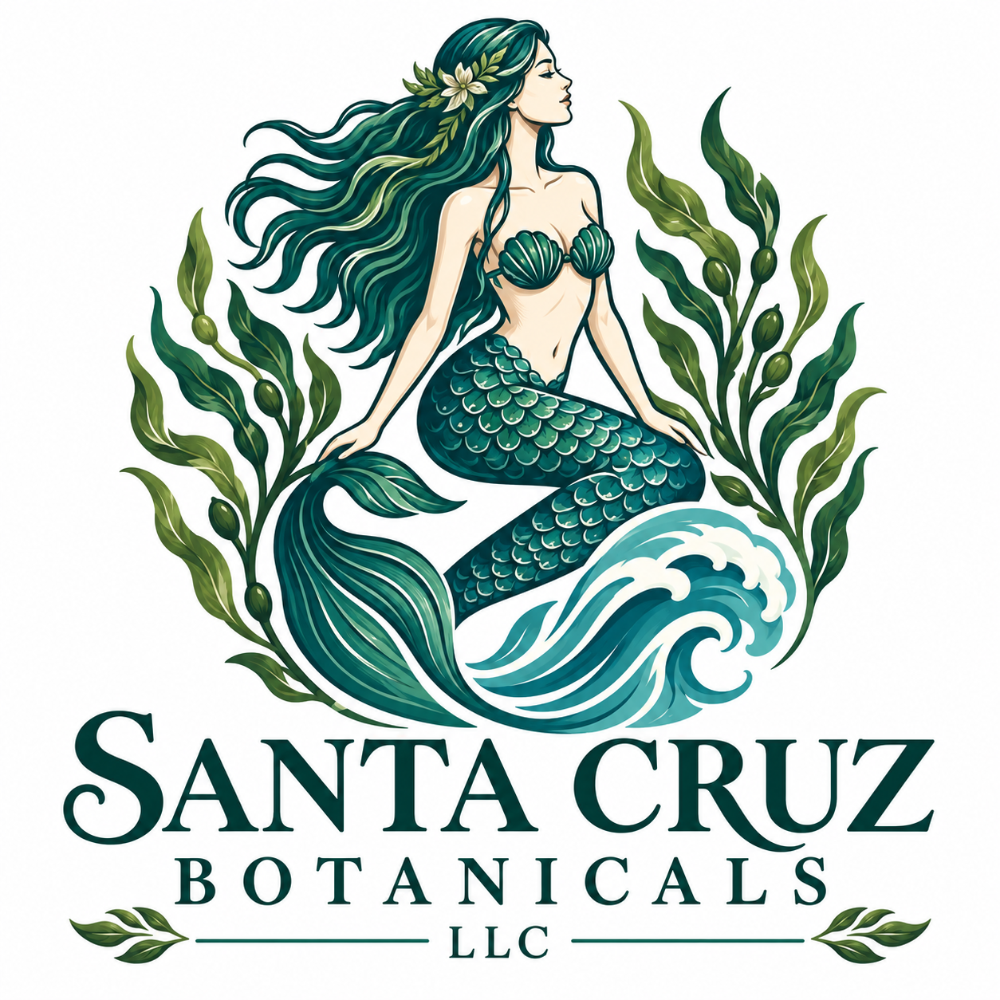

Bring the beauty and tranquility of the ocean into your home.

Organic Sea Art
My name is Adi Svara Welch, the founder of Santa Cruz Botanicals. I am a lifelong admirer of the ocean and a retired biology teacher with over 30 years in the classroom.
I create organic sea art using pressed seaweed collected from our local beaches of Santa Cruz, California.
Each piece is a unique expression of the ocean’s beauty, available in a variety of sizes, along with fine art prints that allow more people to bring a piece of the sea into their homes.
My mission is to share the wonder of marine life through art, inspire ocean education and conservation, and capture the deep sense of peace and connection we feel when standing beside the ocean.
Through my work, I hope to bring that same tranquility, beauty, and spirit of the sea into your home, wherever you may be.